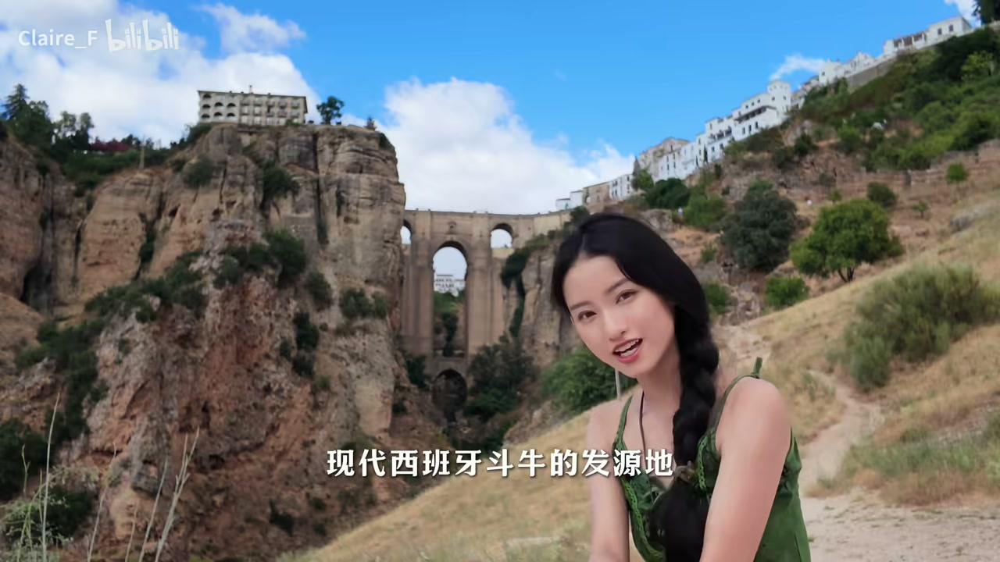
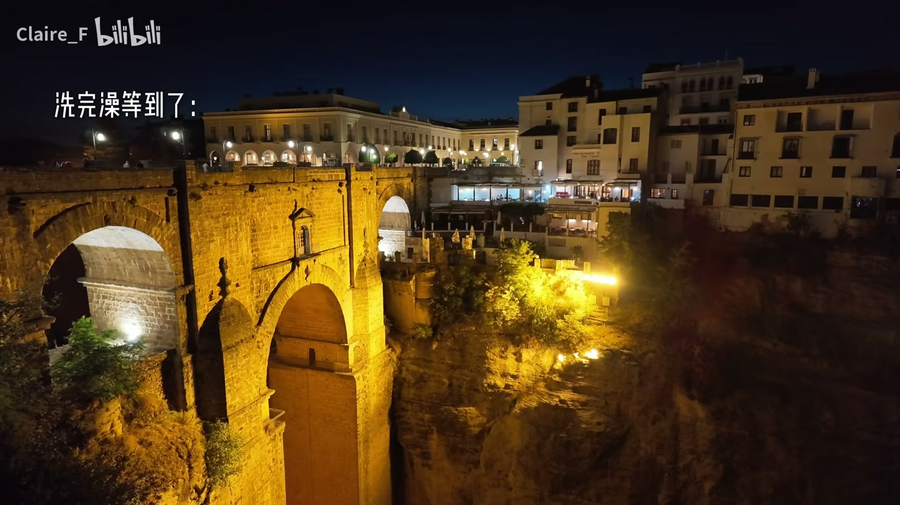

悬崖之上的天空之城
00:00那里是建在百米悬崖之上的古城。欢迎收看漫游西班牙系列第四期——悬崖之上的天空之城，现代西班牙斗牛的发源地。
00:15刚刚去看了昨天没有看到的西班牙广场，现在就去我们的下一站——传说中最适合私奔的小镇。欧洲的水质实在是太差了，这两天头发干得跟枯草一样，梳都梳不开。
00:35哇，我们酒店就在悬崖边边上。对呀，这就是那个墙。这里是悬崖，那里就是我们要去的地方——龙达斗牛场，西班牙最古老的斗牛场之一。

龙达斗牛场：从马背到肉搏
00:55最早的西班牙斗牛是像这样子骑在马背上、用长矛进行的，并且是贵族的特权。就是从龙达这个斗牛场开始，变成了老百姓跟牛贴身肉搏，然后才慢慢变成了一种职业表演。
01:20怎么从马背上变成肉搏的？有两种说法。有一个叫罗美罗的木匠（当时看到）一个贵族从马背上摔下来，快要被牛给杀死了，她随手脱了自己的红衣外套把牛给拧开了，意外发现了（这个方法）。
01:50这里每一间楼梯都画的是关于斗牛的不同的话。
- 早期：马背+长矛+贵族特权
- 转折：罗美罗木匠用红衣外套引开牛的传说
- 结果：贴身肉搏→职业表演
被赦免的公牛：极小的概率
02:10刚刚我妈妈问我：斗牛是不是必须要把那个牛杀死？然后我说是的。为了严谨：有一种非常非常小的概率，这个牛是可以被赦免的。
02:25首先这个牛表现得非常不屈、坚韧；全场的观众举白手帕请愿；当场的（斗牛师/裁判）认为值得被赦免；最后那个斗牛师要举一个空刺的动作，来表达自己其实是有能力可以把牛杀死的。
- 牛表现得不屈且坚韧
- 全场观众举白手帕请愿
- 当场的裁判认为值得赦免
- 斗牛师举空刺动作，表明自己有杀死它的能力
斗牛场与关牛的视角
02:50昨天看了斗兽场，斗兽场没了又来了一个斗牛场。这是关牛的地方，来体验一下牛牛的视角——冲出去！
03:00斗牛场一出来就是新桥——一座在悬崖之上连接两边的桥。给大家看一下从上到下的这个视角。
新桥石室：曾经关押重刑犯
03:15桥的中央是一小间石室，曾经被用来关押重刑犯。据说内战时期会直接把囚犯从这里推下去。
03:30我们穿着人字拖走了这么难走的碎石路，来到了这个绝佳观赏位。他怎么精力这么旺盛啊，他上来了——悬崖之上的车。他为什么不建个电梯呢？
悬崖上的熟人：nice to meet you again
03:45我刚刚遇到一个大叔，一直在对着我说 'nice to meet you again'，然后我就一脸懵地看着他。他又说了好几遍，我还是没反应。他说：I saw you yesterday。我说：真的？Oh really? You have been in Seville? Yes. In the real Alcázar（塞维利亚王宫）。Oh really? I'm so glad you remember me. Yeah, so beautiful you are. Thank you. See you again tomorrow. Bye.
悬崖午餐与安达卢西亚牛尾
04:15今天的中式妈妈很宽容啊。我说我想吃冰淇淋的时候，以为我妈会给我来一句'马上要吃饭了你还吃什么冰淇淋'，结果他给我来了一句'我也想吃'。
04:30我们找了一个可以看峡谷的地方吃饭。对面看过去风景更好些，但是我妈怕晒，我很明显不怕晒，所以被晒了。风景更好，我们可以吃鱼尾鱼吗？可以，还有鱼尾鱼。历史总是相似的——这个羊腿比我妈妈点的要贵，然后又更难吃。
04:45我那天看到有粉丝说让我拍美食你们会后悔的。不过安达卢西亚的牛尾特别好吃——其实跟这里是斗牛的发源地有很大的关系，因为最早的斗牛尾实际上就是斗牛场退下来的公牛的尾巴做成的菜。我点的实在太难吃了，我们只能打包了。第一次见打包居然还给我装真空的。
- 安达卢西亚牛尾：来自斗牛场退下来的公牛尾巴
- 羊腿贵又难吃，只能真空打包
- 妈妈从'马上要吃饭了'变成了'我也想吃'
天黑很晚的西班牙与私奔小镇
05:30看到一个美丽的亭子就想在这里入住，但是跟我在网上看的不一样——怎么没有老外来教育我这个尴尬（梗）。晚上9点半了，这天还不黑。我们特别想等着它天黑以后那个桥会亮灯，结果一直没等到。先去洗个澡吧。
05:50给大家看看晚上11点的西班牙——根本就没有人睡觉。这就是社交媒体上大家所谓的'私奔小镇'。因为有一位作家叫海明威，曾经写过一段话，大意是：如果你要来西班牙度蜜月或者和情人私奔，那龙达是最适合的小镇。你觉得浪漫吗？
